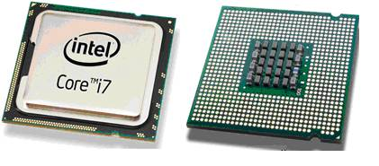
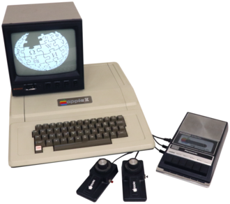
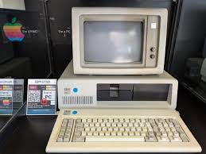

Головна
Головна
Головна
Головна
Четверте покоління комп’ютерів (з початку 1970-х років і до сьогоднішнього дня) базується на мікропроцесорах — повноцінних процесорах, розміщених на одному кристалі.
Це покоління стало початком ери персональних комп’ютерів, які стали доступними не лише великим організаціям, а й окремим користувачам.
У 1971 році компанія Intel створила перший мікропроцесор Intel 4004, який став революцією в комп’ютерній індустрії.
Це дозволило об’єднати всі основні функції процесора на одному чіпі, що значно зменшило розміри комп’ютерів і їхню вартість.
Починається масове поширення персональних комп’ютерів у домівках, школах і офісах.
Основою четвертого покоління стали мікропроцесори та великі інтегральні схеми (VLSI), які дозволили розміщувати мільйони транзисторів на одному чіпі.

Це забезпечило: високу швидкість обробки даних, мінімальні розміри пристроїв, низьке енергоспоживання.
Один із творців першого мікропроцесора Intel 4004.
Головний розробник першого комерційного мікропроцесора.
Зробив комп’ютери масовими та доступними користувачам.
Один із перших масових персональних комп’ютерів, який зробив технології доступними для звичайних користувачів.

Стандарт персонального комп’ютера, який визначив розвиток індустрії на десятиліття вперед.

У четвертому поколінні відбувається вибуховий розвиток програмного забезпечення.
З’являються графічні інтерфейси, операційні системи для масового користувача (MS-DOS, Windows, macOS).
Програмування стає професійною індустрією з великою кількістю мов і фреймворків.